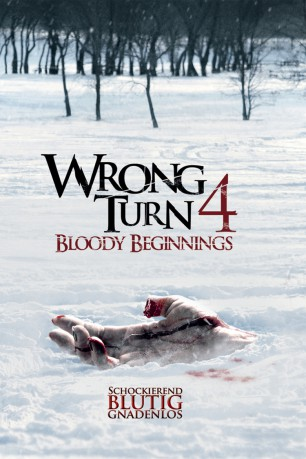
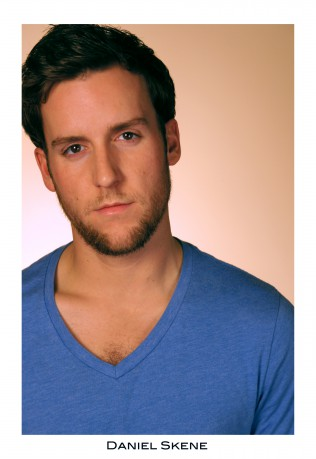

#6941 Wrong Turn 4 - Bloody Beginnings
 
 IMDB-Wertung: 4.6 / 10
IMDB-Wertung: 4.6 / 10  Metascore: 0
Metascore: 0 
In einer psychiatrischen Anstalt in den einsamen Bergen von West Virginia harren drei irre Hinterwäldlergeschwister von hohem destruktiven Drang und gefährlich geringem Schmerzempfinden der Gelegenheit zu Ausbruch und finalen Abrechnung mit dem auch nicht zimperlichen medizinischen Personal. Danach richten sie sich die nunmehr verwaiste Klapsmühle als Stützpunkt ein. Als eine Gruppe ahnungsloser junger Wintersportler von den Wüstlingen attackiert wird, suchen die Kids Schutz ausgerechnet in der verlassenen Klinik.
Jahr: 2011
Dauer: 93 Minuten
FSK: 18
Land: USA Studio: 20th Century Fox Home EntertainmentTonspuren: DTS - ,
Untertitel: Deutsch,
Auflösung: 1080p (1920x1080) Größe: 4577 MB
Genre: Horror
Regisseur: Declan O'Brien
Drehbuch: Declan O'Brien
Soundtrack:
Darsteller:
- Jennifer Pudavick als Kenia
- Tenika Davis als Sara
- Kaitlyn Leeb als Bridget
- Terra Vnesa als Jenna
- Ali Tataryn als Lauren
- Samantha Kendrick als Claire
- Victor Zinck Jr. als Kyle
- Dean Armstrong als Daniel
- Sean Skene als Three Finger / Vincent
- Blane Cypurda als Three Finger, 8
-  Dan Skene als One Eye
- Scott Johnson als Saw Tooth / Orderly
- Kristen Harris als Dr. Ann Marie McQuaid
- Tristan Carlucci als One Eye, 9
- Bryan Verot als Saw Tooth, 10
- Arne MacPherson als Dr. Ryan
- Dave Harms als Dead Porter
- Mark Kiazyk als Box Head
Datei: X:\FSK18-Collections\Wrong Turn\Wrong Turn 4 - Bloody Beginnings (2011, FSK18, 1920x1080).mkv seit 08.09.2017
Festplatte: FSK18
 Es gibt insgesamt 9 Filme in der Gruppe 'FSK18-Collections\Wrong Turn'
Es gibt insgesamt 9 Filme in der Gruppe 'FSK18-Collections\Wrong Turn'